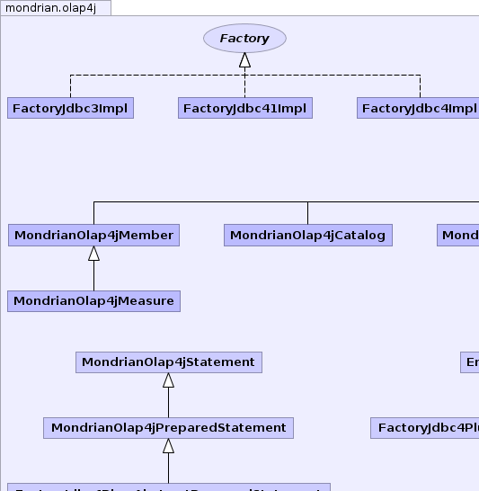
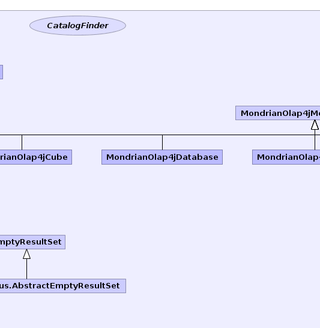
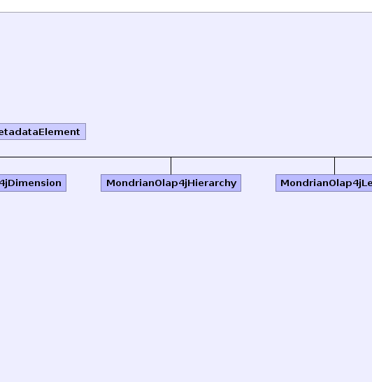
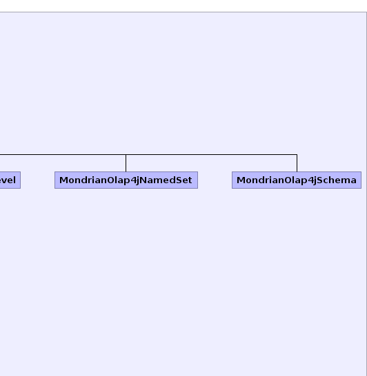
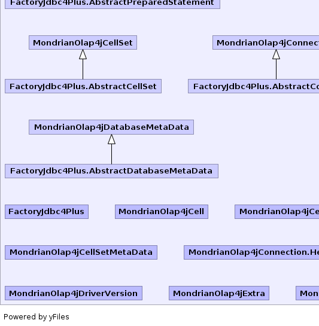
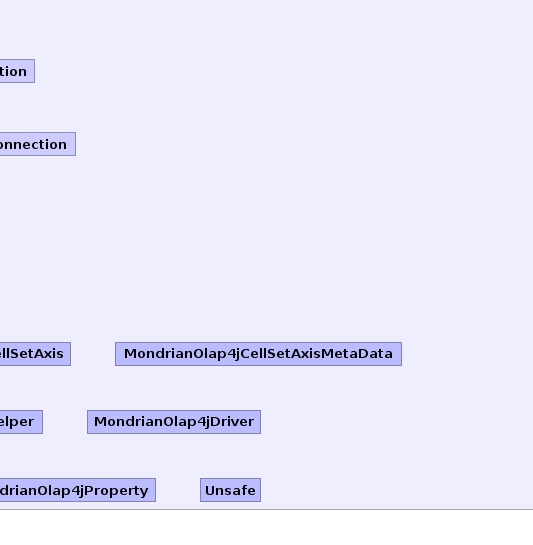

- Overview
- Package
- Class
- Tree
- Deprecated
- Index
- Help
| Interface | Description |
|---|---|
| CatalogFinder |
Strategy to locate schemas and catalogs.
|
| Factory |
Instantiates classes to implement the olap4j API against the
Mondrian OLAP engine.
|
| Class | Description |
|---|---|
| EmptyResultSet |
Implementation of
ResultSet which returns 0 rows. |
| FactoryJdbc3Impl |
Implementation of
Factory for JDBC 3.0. |
| FactoryJdbc41Impl |
Implementation of
Factory for JDBC 4.1. |
| FactoryJdbc4Impl |
Implementation of
Factory for JDBC 4.0. |
| FactoryJdbc4Plus |
Abstract JDBC classes, for JDBC 4.0 and 4.1.
|
| FactoryJdbc4Plus.AbstractCellSet | |
| FactoryJdbc4Plus.AbstractConnection | |
| FactoryJdbc4Plus.AbstractDatabaseMetaData | |
| FactoryJdbc4Plus.AbstractEmptyResultSet | |
| FactoryJdbc4Plus.AbstractPreparedStatement | |
| MondrianOlap4jCatalog |
Implementation of
Catalog
for the Mondrian OLAP engine. |
| MondrianOlap4jCell |
Implementation of
Cell
for the Mondrian OLAP engine. |
| MondrianOlap4jCellSet |
Implementation of
CellSet
for the Mondrian OLAP engine. |
| MondrianOlap4jCellSetAxis |
Implementation of
CellSetAxis
for the Mondrian OLAP engine. |
| MondrianOlap4jCellSetAxisMetaData |
Implementation of
CellSetMetaData
for the Mondrian OLAP engine. |
| MondrianOlap4jCellSetMetaData |
Implementation of
CellSetMetaData
for the Mondrian OLAP engine. |
| MondrianOlap4jConnection |
Implementation of
OlapConnection
for the Mondrian OLAP engine. |
| MondrianOlap4jConnection.Helper |
Package-private helper class which encapsulates policies which are
common throughout the driver.
|
| MondrianOlap4jCube |
Implementation of
Cube
for the Mondrian OLAP engine. |
| MondrianOlap4jDatabase |
Implementation of
Database
for the Mondrian OLAP engine. |
| MondrianOlap4jDatabaseMetaData |
Implementation of
OlapDatabaseMetaData
for the Mondrian OLAP engine. |
| MondrianOlap4jDimension |
Implementation of
Dimension
for the Mondrian OLAP engine. |
| MondrianOlap4jDriver |
Olap4j driver for Mondrian.
|
| MondrianOlap4jDriverVersion |
Version information for the Mondrian olap4j driver.
|
| MondrianOlap4jExtra |
Provides access to internals of mondrian's olap4j driver that are not part
of the olap4j API.
|
| MondrianOlap4jHierarchy |
Implementation of
Hierarchy
for the Mondrian OLAP engine. |
| MondrianOlap4jLevel |
Implementation of
Level
for the Mondrian OLAP engine. |
| MondrianOlap4jMeasure |
Implementation of
Measure
for the Mondrian OLAP engine,
as a wrapper around a mondrian
RolapStoredMeasure. |
| MondrianOlap4jMember | |
| MondrianOlap4jMetadataElement |
Basic features of metadata elements in Mondrian's olap4j driver.
|
| MondrianOlap4jNamedSet |
Implementation of
NamedSet
for the Mondrian OLAP engine. |
| MondrianOlap4jPreparedStatement |
Implementation of
PreparedOlapStatement
for the Mondrian OLAP engine. |
| MondrianOlap4jProperty | |
| MondrianOlap4jSchema |
Implementation of
Schema
for the Mondrian OLAP engine. |
| MondrianOlap4jStatement |
Implementation of
OlapStatement
for the Mondrian OLAP engine. |
| Unsafe |
Access to non-public methods in the package of the mondrian olap4j driver.
|
|  |  |  |  |
|  |  |